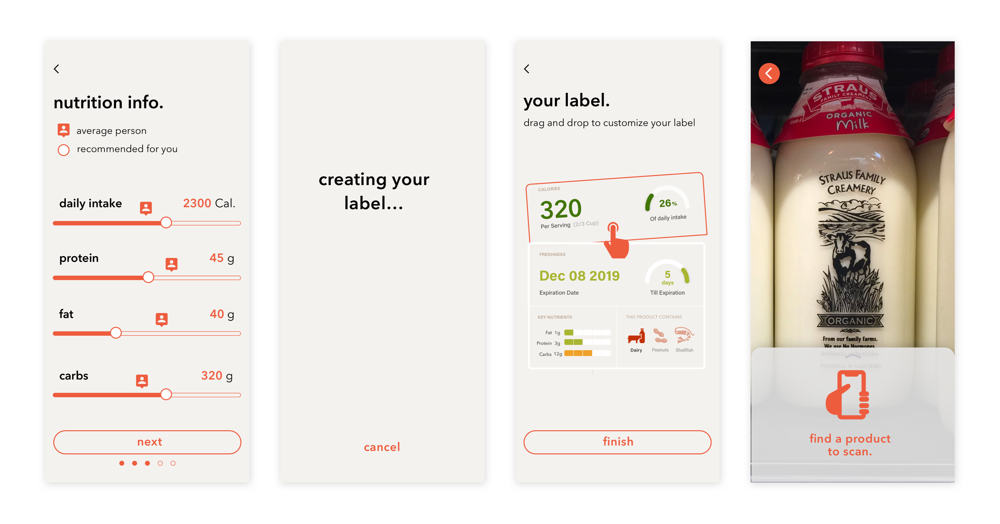
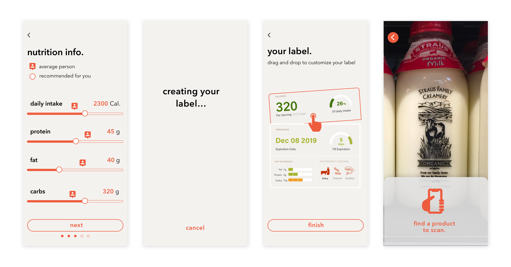

Universal label for everyone?
Allergies, diets, body types and several other considerations affect the way we select and purchase food everyday. However, homogenous nutrition labels on food packaging, which is the primary touchpoint of information, can be limited to individual needs. With the power of augmented reality, an interactive experience that enhances the real-world environment using computer-generated information, we designed an experience that expands the capabilities of food labeling and personalizes people’s grocery experience.
Challenges
How can we enhance the grocery shopping experience for people with dietary needs?
This project was inspired by friends who voiced their frustrations for comparing products and exploring new products. It is difficult for people who have allergies and other dietary restrictions especially to find a product that would fit their needs, and sometimes these important information are hidden in the complicated food labels and packagings.
How can we address the growing food traceability concern?
Being able to identify the origin of food products, from the farm through processing plants to retail, has been a persistent concern for general consumers in the U.S. While traceability information can be complex and hard to digest, new technologies such as augmented reality could open up whole new ways to tell the story of our food.

Outcome
With augmented reality, WholeStory expands the capabilities of food labeling by customizing them towards each person’s dietary needs and educating users with food traceability information.
Set up personal profile
Since everyone may have different dietary restrictions and needs, we made sure that the set up flow is comprehensive and controllable. After users input the information, a recommended nutrition breakdown and a suggested label layout will be generated for the user.
 

View and compare products
The view and compare flows are designed to be used inside the stores. This allows users to quickly compare products of the same kind and make a decision on which one fits their needs.


Label system
The four types of information are the building blocks of a label. The more important information will be shown in full width while the less important ones will be shown in half width. In addition, the tags on the corners of the label will call out the most important decision-making factor of a product.

Food traceability
For products that are clearly traceable, traceability information will appear on the back side of food labels when the user tap on the personalized label. Users could also expand on each processing facility to view more information about it.

Immersive AR experience
WholeStory uses AR to bring to life the story behind each product, which help customers make more informed food choices. Because of the interactiveness of the format, this function could be used for traceability education for kids, as well as for commercial campaigns.